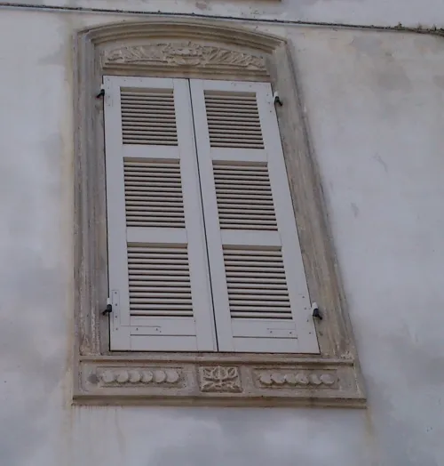
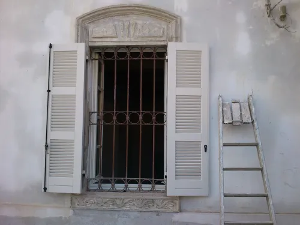
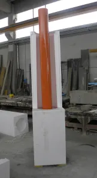
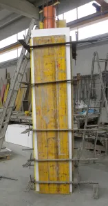
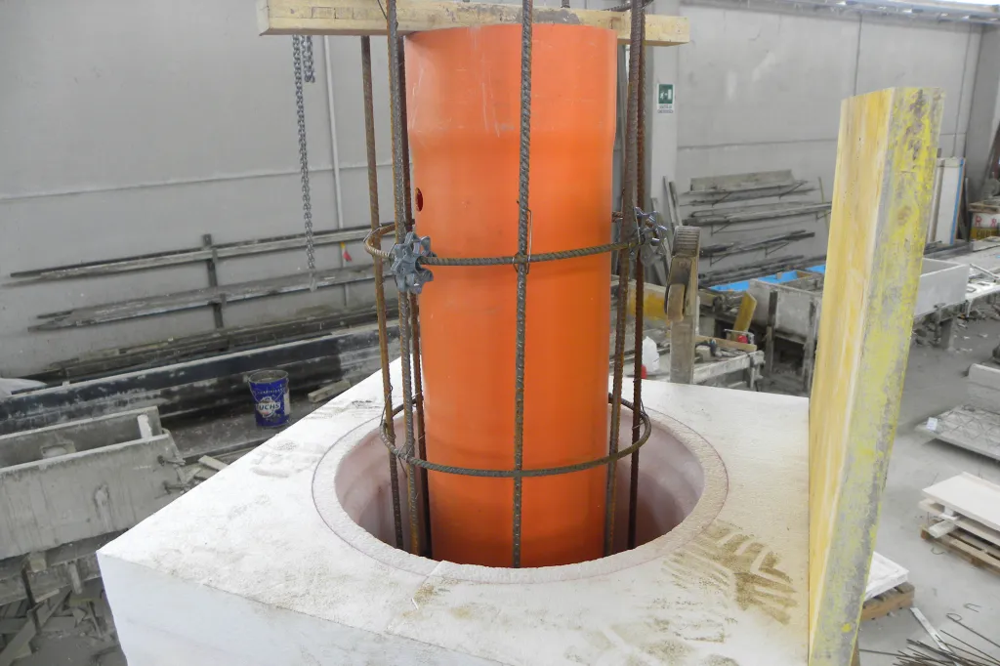
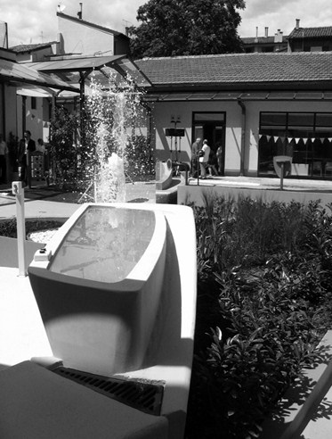

ALTA SPECIALIZZAZIONE & PEZZI UNICI
Lavori Speciali e Restauro Conservativo su Disegno
Quando l'edilizia incontra l'arte, il restauro storico o sfide architettoniche fuori standard, la Righi Germano mette in campo il proprio reparto di lavorazioni speciali: scultura, calchi siliconici, carpenteria lignea complessa e miscele formulate ad hoc.
Realizziamo manufatti a pezzo unico per la fedele ricostruzione di elementi ornamentali degradati in edifici vincolati, oppure per la materializzazione di progetti contemporanei complessi su tavole CAD/BIM di architetti e progettisti.
Casi Studio & Cantieri d'Eccellenza
Quattro interventi significativi che testimoniano la versatilità esecutiva e il rigore artigianale dell'officina Righi Germano:
Cornici di Facciata - Municipio di Trecasali (PR)
Rilievo, modellazione e ripristino conservativo in opera delle cornici marcapiano e sagomature architettoniche del Municipio, fortemente danneggiate dal tempo.





Ricostruzione di Colonna Monumentale
Ricostruzione fedele di una colonna storica mediante cassaforma sagomata complessa in legno e gabbia d'armatura strutturale integrata ad alta resistenza.






Scultura Figurativa "Testa di Leone"
Elemento ornamentale artistico realizzato come pezzo unico su disegno. Modellazione ad altissima definizione anatomica e getto compatto a grana fine a prova di gelo.

Vasca Tattile-Sensoriale - Ospedale Roncati (BO)
Manufatto monolitico curvo progettato per stimolazioni sensoriali e riabilitative presso la struttura ospedaliera bolognese, con raccordi continui privi di spigoli vivi.


Hai un manufatto d'epoca da replicare o un pezzo unico da realizzare?
Inviaci fotografie, rilievi o disegni tecnici: il nostro team esegue studi di fattibilità, calchi e stime di costo per commesse speciali.